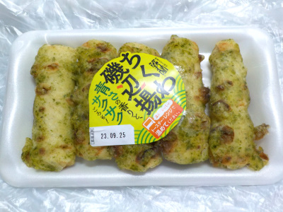

かね貞のちくわ磯部揚。
2023/09/20

半分に切られた竹輪の磯部揚げが5本入ってます。
磯部揚げは美味しいけど作るのは面倒です。なので惣菜や冷凍食品に頼っています。
パッケージに「トースター・レンジで温めてください。」と書かれていますが、そのまま食べました。
書いてある様に温めて食べれば良かったと、後から思いました。
次買うときはしっかりトースターで温めようと思います。フライパンで温めるとは書いてないけど、フライパンじゃダメなのかな？
愛知県みよし市莇生町上永井田48-2
2023/09/20

半分に切られた竹輪の磯部揚げが5本入ってます。
磯部揚げは美味しいけど作るのは面倒です。なので惣菜や冷凍食品に頼っています。
パッケージに「トースター・レンジで温めてください。」と書かれていますが、そのまま食べました。
書いてある様に温めて食べれば良かったと、後から思いました。
次買うときはしっかりトースターで温めようと思います。フライパンで温めるとは書いてないけど、フライパンじゃダメなのかな？